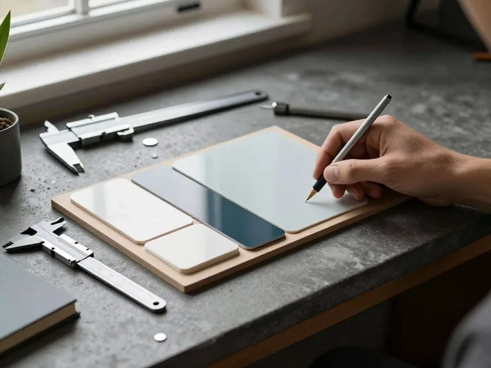
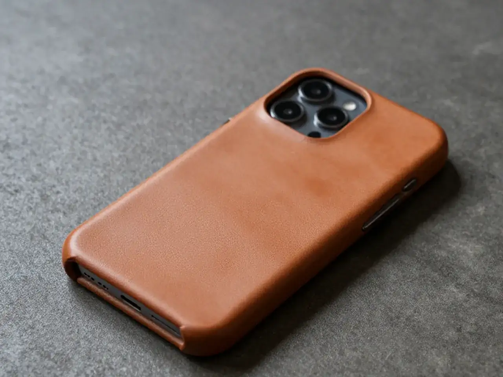

芳綸、皮革、防摔：三種殼材到底怎麼選
Aramid, Leather or Drop Protection — How to Choose
手機殼這個東西，買錯一次就會知道自己要什麼。我把三種材質攤開來講，不是為了讓你買貴的，是為了讓你少買兩次。
芳綸纖維：薄、輕、硬，但它不吸震
芳綸的規格擺在這裡：厚度 0.65–0.75 毫米，重量 11–13 克，3K 斜紋，表面啞光，內嵌 N52 磁石陣列，鏡頭位抬高 0.8 毫米。
它是硬的。硬的意思是——手機摔下去，衝擊會直接傳到機身上，殼只負責不被刮花、不碎邊角。所以芳綸適合的是「本來就小心、討厭厚重」的人，不是「經常手滑」的人。

還有一點很少人講：芳綸的邊框是硬的，裝上去要靠卡扣，拆的次數多了會鬆。它不是那種你可以一週換三次殼的材質。
皮革：越用越像你的
頭層牛皮包在吸震內框外面，價格帶 $189–$259，是三種裡最貴的主力款。
皮的好處是會變。第一週是新的，第三個月邊角開始發亮，一年後那層光澤只有你有。壞處也很誠實：怕水、怕酒精、怕防曬乳，掉在地上會留印子。
如果你一年換一次手機，皮革的「養成期」剛好跟你的使用期對得上；如果你三個月就想換機，皮的價值你收不回來。

防摔殼：MIL-STD-810G 的目標，不是保證
防摔這條線的價格帶 $119–$590，四角氣囊、內框吸震，規格上是對標 MIL-STD-810G 的測試目標。
這裡要說清楚：MIL-STD-810G 是一個測試標準，不是一張保固單。 它測的是特定高度、特定角度、特定地面的跌落，不是「你從樓梯上掉下去也一定沒事」。任何跟你說「軍規防摔絕對不壞」的，都在賣話術。
防摔殼的代價是厚度和重量，手感會明顯鈍。它能換來的，是你少一次心驚。
三種材質怎麼選：三個問題
- 你一年摔幾次手機？超過三次，直接看防摔，別看芳綸。
- 你在意手感還是外觀？在意手感選芳綸，在意「越用越有味道」選皮革。
- 你多久換一次機？一年以上選皮革划得來，一年以內選芳綸。
至於訂造（$349–$590，4–6 週交期）和委託（$1,200–$4,500，一件一設計），那是另一件事——不是「更好的殼」，是「只有你有」的殼。這個我們另外寫一篇。
常見問題
- 芳綸會擋無線充電嗎？ 內嵌 N52 磁石陣列，對齊 MagSafe，正常無線充電不受影響。
- 皮革可以碰水嗎？ 濺到要立刻擦乾，別泡、別用酒精擦。
- 防摔殼會不會太厚裝不進口袋？ 會比芳綸厚，這是物理，不是工藝問題。
- 可以三個材質各買一個嗎？ 可以，但先想清楚你最常摔的是哪一種場景。
Every case is cut to order. Ask us before you buy.每一件都是按單裁製。買之前，先問我們。